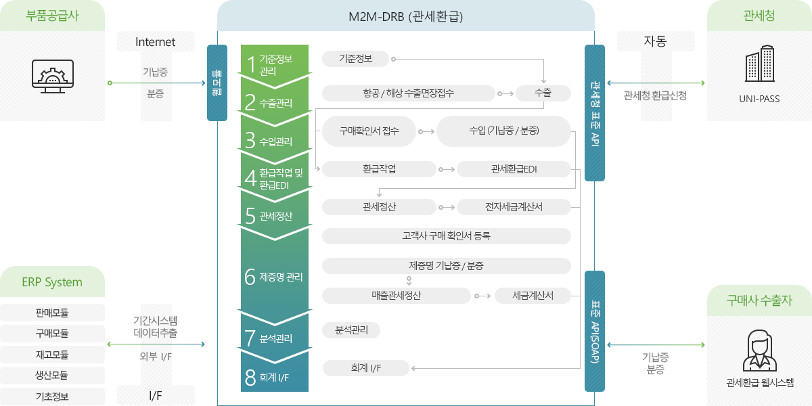

M2M-eDrawback 서비스 개요
M2M-eDrawback은 업무컨설팅에서 시스템 구축, 유지보수까지 어렵게 느껴지는 기업의 관세환급업무를 고객의 눈높이에서 보다 쉽고 편리하게 수행할 수 있도록 고객 맞춤형 업무 환경을 제공합니다.
-
1단계 원재료 수입
환급대상원재료(징수)
-
2단계 제조·가공
수출이행기간(2년)
-
3단계 제품·수출
환급대상수출(환급)
-
4단계 관세환급 신청
환급신청기간(2년)
-
유연한 환급작업
- 환급작업 속도보장
- 대기시간 최소화
- 산정결과의 수정 석재 기능
- 재산정 지원
- 관세청EDI전송
-
환급금 최대화
- 다양한 분석기능, 부족부품 분석, 소요량분석
- 환급금 최대화, 대체자재, 우선자재, 단축고시
-
관세정산 지원
- 부품공급사 선지급 관세 계산
- 관세청 환급금과 비교 정산
- 검증기능 제공
-
부품공급 지원
- 기납증/분증 발급
- 관세청EDI 전송
- 발주서 근거 일괄생성 기능
M2M-eDrawback 비즈니스 구성도
